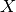

FindReflectometryLines dialog.
Table of Contents
Finds fractional workspace index corresponding to reflected or direct line in a line detector workspace.
| Name | Direction | Type | Default | Description |
|---|---|---|---|---|
| InputWorkspace | Input | MatrixWorkspace | Mandatory | A reflectometry workspace. |
| OutputWorkspace | Output | MatrixWorkspace | A workspace containing the fractional workspace index of the line centre. | |
| LineCentre | Output | number | The fractional workspace index of the line centre | |
| RangeLower | Input | number | Optional | The lower peak search limit (an X value). |
| RangeUpper | Input | number | Optional | The upper peak search limit (an X value). |
| StartWorkspaceIndex | Input | number | 0 | Index of the first histogram to include in the peak search. |
| EndWorkspaceIndex | Input | number | Optional | Index of the last histogram to include in the peak search. |
This algorithm finds the line position in a line detector reflectometry dataset. It integrates InputWorkspace over the  axis and fits the sum of a Gaussian and a linear background to the integral. The center of the Gaussian, a fractional workspace index to the InputWorkspace, is returned as a single valued workspace in OutputWorkspace and as a plain number in the LineCentre output property.
The integration region can be constrained by RangeLower and RangeUpper which restrict the range. Further, the peak fitting can be controlled by StartWorkspaceIndex and EndWorkspaceIndex which limit the workspace index range.
If the peak fitting fails, the algorithm logs a warning and returns the workspace index of the integral maximum.
Note
To run these usage examples please first download the usage data, and add these to your path. In MantidPlot this is done using Manage User Directories.
Example - FindReflectometryLines2
LoadISISNexus('POLREF00004699.nxs', OutputWorkspace='ws', LoadMonitors='Exclude')
# 'ws' is a group workspace -> OutputWorkspace is a group as well
FindReflectometryLines('ws', OutputWorkspace='pos')
# Access individual outputs
pos1 = mtd['pos_1']
pos2 = mtd['pos_2']
print('Line position in the 1st workspace: {:.3}'.format(pos1.readY(0)[0]))
print('Line position in the 2nd workspace: {:.3}'.format(pos2.readY(0)[0]))
# With single workspaces one can use the named tuple output
out = FindReflectometryLines('ws_1')
print('Line position from the returned tuple: {:.3}'.format(out.LineCentre))
Output:
Line position in the 1st workspace: 25.7
Line position in the 2nd workspace: 25.7
Line position from the returned tuple: 25.7
Categories: Algorithm Index | Reflectometry | ILL\Reflectometry
C++ source: FindReflectometryLines2.cpp (last modified: 2018-11-28)
C++ header: FindReflectometryLines2.h (last modified: 2018-10-05)
{kind=link}